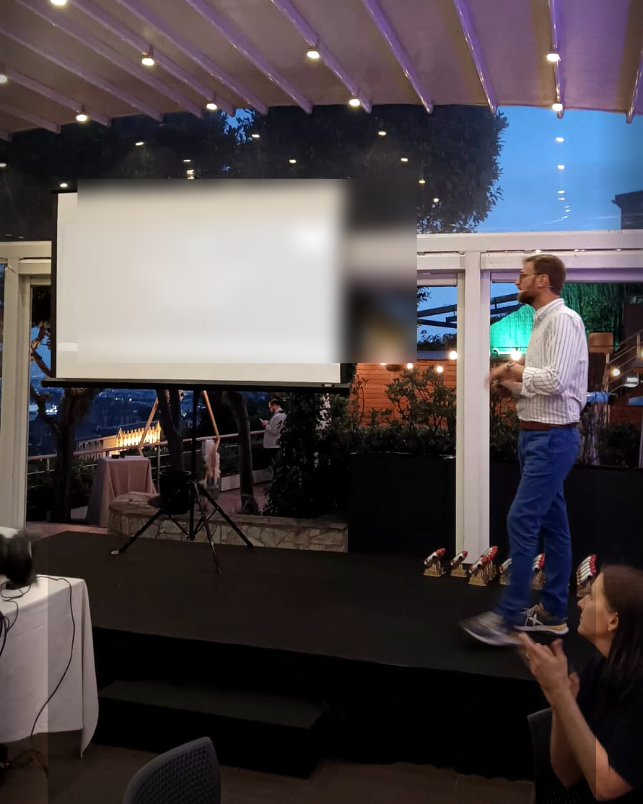
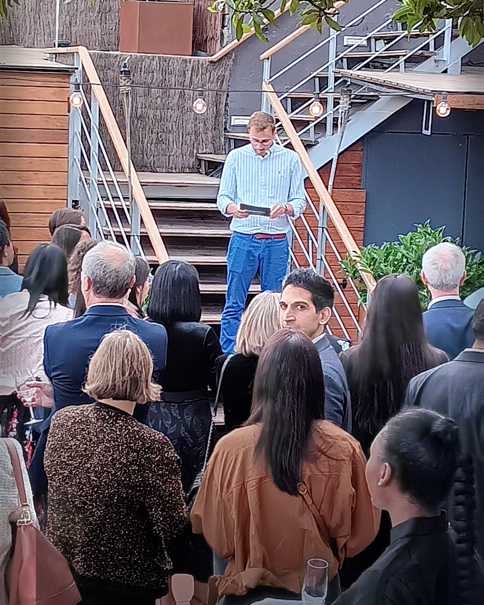
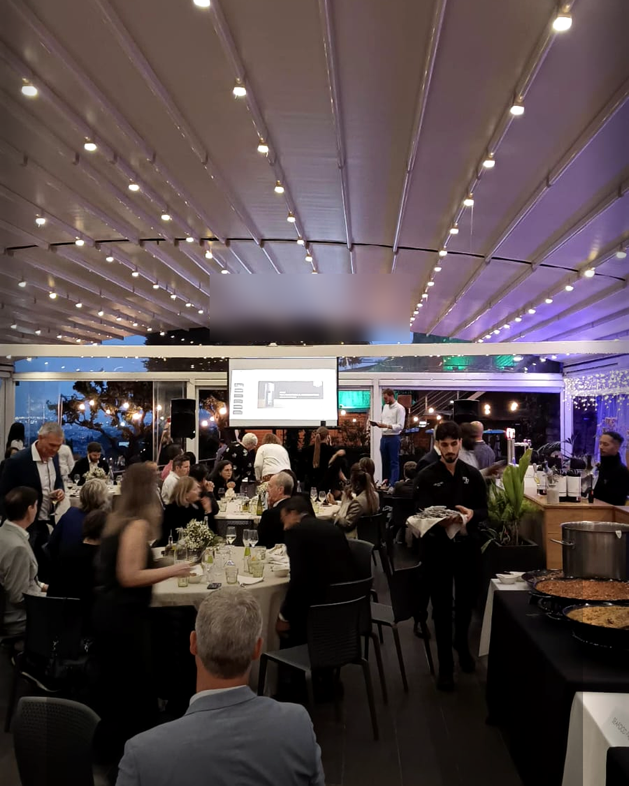

Mirabé · Evento corporativo
Borrador para revisión. Propuesta: carrusel de 3 slides, no publicar hasta aprobación.



Ayer estuvimos en Mirabé dando soporte técnico a un evento corporativo: pantalla, sonido, microfonía y seguimiento de la presentación. Un trabajo discreto, pero importante: que se escuche bien, que se vea claro y que el evento avance con naturalidad. Con @homsdani al frente del montaje y la coordinación técnica. Eventos corporativos, presentaciones y celebraciones privadas en Barcelona, Girona y Costa Brava. #EventoCorporativo #MirabeBarcelona #SonidoEventos #EventosBarcelona #CostaBravaMusicEvents #CorporateEvents #DaniHoms